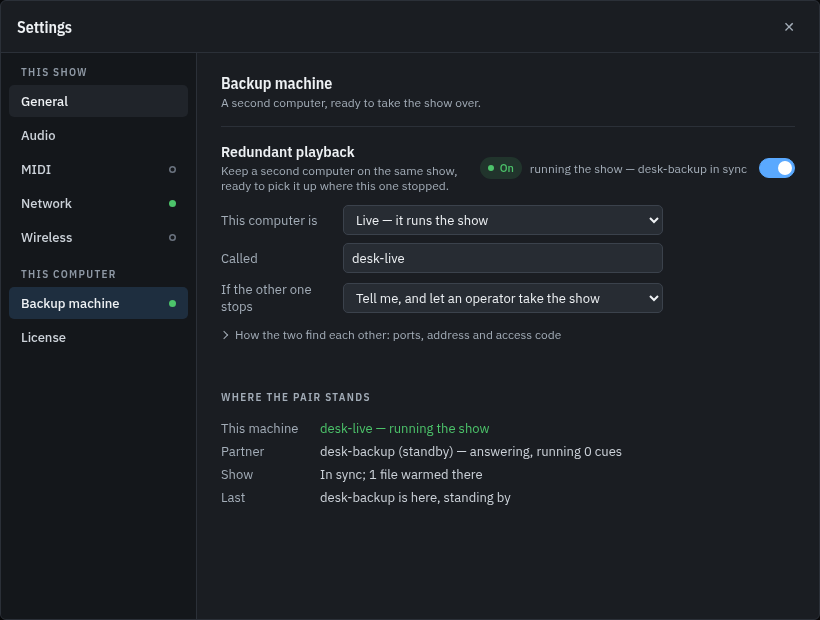
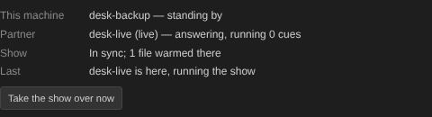
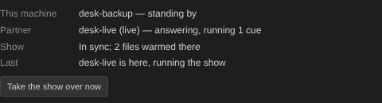
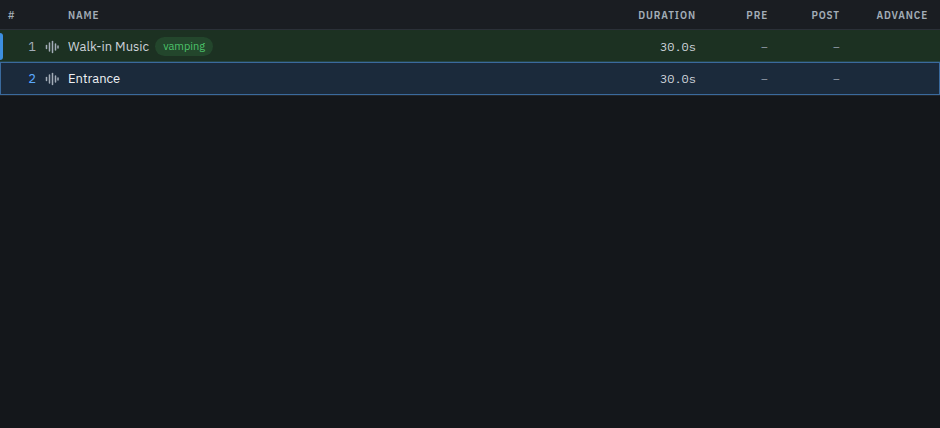
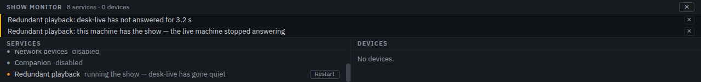
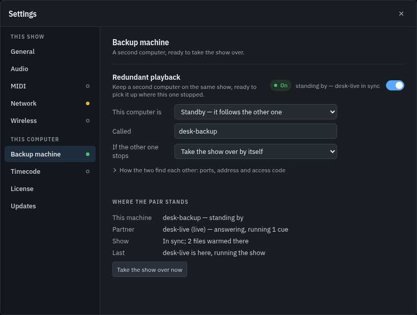
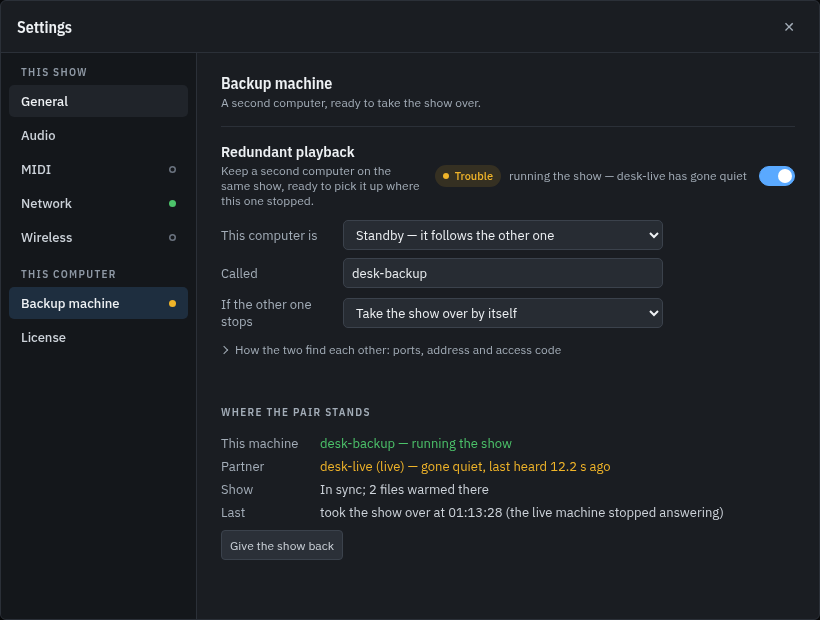
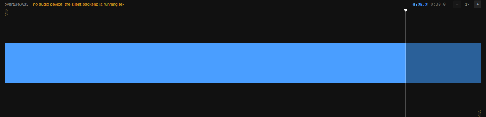
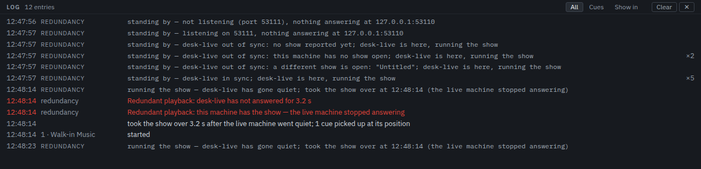

Redundant playbackPro
Two machines run the same show. One drives it; the other stands by, watching the same workspace, mirroring which cue is running and how far into its file the engine has reached, and holding the media for it ready. If the machine driving stops answering, the one standing by takes the show over — with the running cue back where it was rather than from the top — and says exactly what it picked up and what it could not.
This page is the walkthrough: what to set on each machine, what the two of them say to each other, what a takeover looks like on screen, and what a pair deliberately does not carry. Everything below was captured from two real copies of the app, one of them killed outright mid-cue, by the same script that regenerates these images.
The pair, in one act
Two copies of the app side by side: on the left the machine running the show, on the right the one standing by for it. The cue is fired, the show runs for a few seconds, and then the machine driving it is closed the way a machine in a rack goes down — process, socket and sound together, while its cue is playing. Nothing else is touched: no cue is fired by hand and the show is never reloaded.
1. Setting the pair up
Each machine is configured on its own, in Settings → Redundancy. The settings
belong to the machine rather than to the show — both machines open the same workspace
file, so a role written into the show would be read as the same answer by both of them —
and they are kept beside the license key, in redundancy.json, not in the
.wlab. Saving the show does not touch them, and copying the show to the
other machine does not carry them.

What each setting does:
| Setting | What it means |
|---|---|
| Redundant playback | Whether this machine is half of a pair at all. Off, it runs the show on its own, opens nothing, and says so. |
| Role | Live runs the show. Standby mirrors it and waits. Both machines dial each other, so either role may be started first. |
| Name | What the other machine calls this one. Two desks are easier to tell apart than two addresses; the host name is the default. |
| Port here | The port this machine listens on for its partner. |
| Other computer, and its port | Where the other machine is. Left empty, this machine only listens — which is what a half-configured pair looks like, and the status says so instead of pretending. |
| Access code | A shared secret, the same on both machines. A machine that arrives with a different one is refused before anything else it says is believed, and it stops dialling rather than asking every two seconds. Left empty, the pair is open to whoever finds the port, and the panel says so. |
| Gone after | How long the partner may say nothing before it is declared gone — three seconds unless you change it, the same three seconds this app already gives a window that has stopped answering. |
| When the partner goes quiet | Tell me: the standby reports it and waits for a hand. Take it over: the standby claims the show itself. |
2. The status, while nothing is wrong
Under the settings is the machine's own account of what it has heard. This is the part an operator actually runs a show from: which half is driving, that the partner is answering, and whether the two have the same show open.

With a cue running on the other machine, the same panel says so:

Three things are worth knowing about answering and in sync. The partner is described as answering when it was answering half a second ago, because that is how often the pair speak — a number that counted up from the last time anything changed would read as a machine that had stopped. In sync is a comparison of the two shows, not a hope: the same workspace, the same cue count, and a fingerprint of the cue list. And the media being warmed means it is decoded into this machine's own engine already, which is what makes a takeover start rather than decode.

3. When the machine driving goes quiet
A partner that has said nothing for the stated silence is declared gone, once. It is an alarm like any other — it appears in the monitor, in the alarm chip, and in the run log — and on the machine that can do something about it, the service row says what happened:

With Take it over the standby claims the show itself; with Tell me it waits, and the operator presses Take the show over now on the same panel. Either way the machine that is now driving says so, in the same status block as before:


4. What the takeover carries
A takeover picks the show up rather than restarting it. The audio cue the live machine was playing is put back on this machine's engine at the position it had reached, plus however long passed between the last beat and the takeover — the position was true when the beat arrived and the show ran on. The operator's place in the show comes across with it, so the next GO fires what the live machine would have fired. Anything this machine was running on its own is stopped first: after a takeover, what is playing is what the mirror says.

Everything that could not be carried forward is named rather than faked, in the run log:

- Sound is carried; one-shots are not. A MIDI or OSC cue has already reached its desk, and sending it again would be a second note.
- A half-finished wait, fade or script is not resumed. That work lived on the machine that died.
- A cue in its post-wait had already finished, and the show's next GO belongs to the cue after it.
- A cue that loops is picked up inside its loop rather than past the end of a region it would have gone round again.
- Everything else is written down — in the log line above, next to the cue it affected.
What a pair does not do
These are the honest edges. None of them is a surprise in the log; every one of them is said out loud when it happens.
- Both machines must have the same show open. The status compares them and says when they do not — including when the cue lists differ because the show was edited and not saved on the live machine. A takeover is not attempted against a different show.
- Edits are not mirrored. The cue stack belongs to the workspace, and a backup that silently rewrote its own copy would be a second editor rather than a backup. Save on the live machine, and the other machine's copy is what the file says.
- A silence cannot be told from a failure. If the link between the two goes while both machines are running, the standby does what it is configured to do, and the live machine stands down when it hears that the show has moved — which is audible for a moment, on both machines. A pair belongs on a switch that is not also carrying somebody else's video.
- Two machines set to Live both believe they are driving, and both panels say so rather than one of them quietly giving way. The term that settles a returning machine is a claim about who took the show over, not a lock on the operator's hands.
Rigging it on the night
- Install the same version of Cuerunner on both machines and open the same workspace file on each.
- On the machine that will drive: Settings → Redundancy, switch it on, set the role to Live, name it, give it a port, and put in the other machine's address and port.
- On the machine that will stand by: the same, with the role set to Standby, its own port, and this machine's address as its partner.
- Set the same access code on both, and decide what should happen when the partner goes quiet.
- Check the status on both: each one should name the other and say In sync. If it says the cue lists differ, save the show on the machine that has the edits.
- Fire a cue on the live machine and watch the standby's panel: it should say the partner is answering and running a cue, and that files are warmed.
- Sound-check the takeover itself: stop the live machine, watch the standby take the show and pick the cue up, then hand it back — Give the show back — and start the live machine again.
The panel, not the log, is what to watch on the night: it is the only place that says in one line which machine is running the show, and the only place that says when the other one was last heard from.